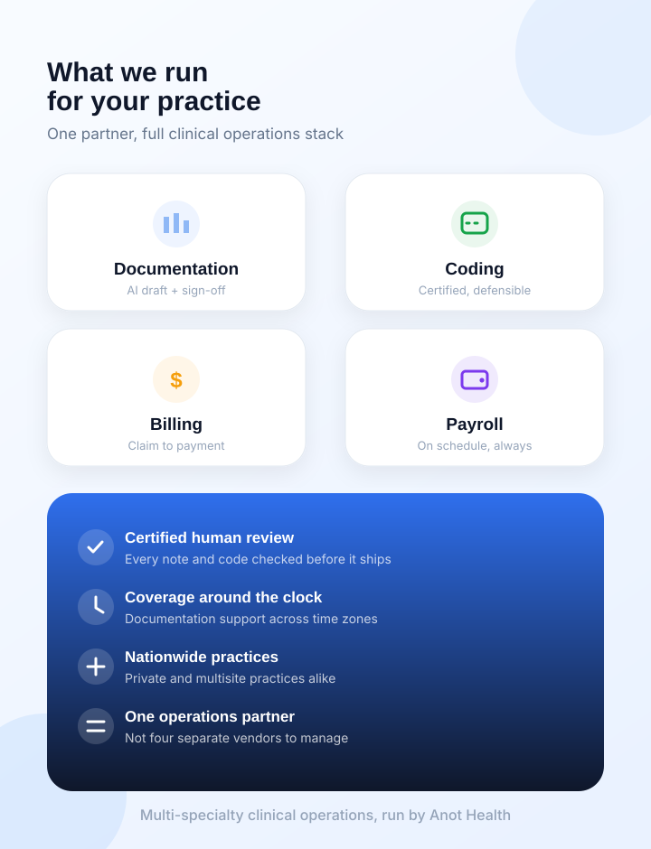

Clinical Scribing
Complete SOAP notes delivered ready to sign before clinic closes.
Learn More →We help Canadian healthcare practices eliminate clinician burnout with human-reviewed clinical documentation, provincial billing (OHIP, MSP, AHCIP), and EMR workflows — pairing high-speed speech AI with certified medical scribes.

Certified scribes & QPS auditors verify every single note.
Instant clinical audio transcription & automated SOAP drafting.
OHIP, MSP, AHCIP & shadow billing reconciliation experts.
In-country Canadian data residency • Accuro, Telus & OSCAR ready.
Complete SOAP notes delivered ready to sign before clinic closes.
Learn More →OHIP, MSP, AHCIP fee-for-service, shadow billing, and fast reimbursement.
Learn More →Certified coders for diagnostic coding and provincial fee schedule mapping.
Learn More →Reconciled physician hours, FHO/FHN roster bonuses, and clean exports.
Learn More →Tailored workflows for Family Practice, Walk-in Clinics, Cardiology & more.
Learn More →Two-stage human review firewall eliminates AI hallucinations.
Learn More →Head-to-head empirical evaluation across 20 real patient encounters — comparing Anot Health against Scribeberry on transcription accuracy, SOAP note structure, and physician editing burden.
Physician readiness score. Signed with minimal editing (Scribeberry: 72% — requires heavy rewriting).
HPI flows logically into Assessment & Plan without fragmented or missing clinical data (Scribeberry: 68%).
Two-stage human audit catches errors before sign-off. Scribeberry offers None (pure unfiltered AI).
| Evaluation Criterion | Anot Health (Live Tested) | Scribeberry (Live Tested) | Industry Average | Advantage |
|---|---|---|---|---|
| SOAP Note Structure Organization, clinical logic, readability | Superior (95%) | Fragmented (68%) | Average (~78%) | Anot Health |
| Physician Readiness Freedom from heavy manual editing | 97% (Ready to Sign) | 72% (Heavy Edits) | 80% | Anot Health |
| Clinical Data Capture Medications, dosages, lab references | 96% Draft • 100% Post-QA | 74% (Dropped details) | 82% | Anot Health |
| Human QA Review Layer Certified Scribe → QPS check before sign-off | Built-in (Dual-Stage) | None (Pure AI) | None (Pure AI) | Anot Exclusive |
| Risk to Clinician & EMR Unchecked hallucinations entering patient record | Zero (Safety Firewall) | High (Unfiltered) | High (Unfiltered) | Anot Health |

Canadian family physicians and specialists spend an average of 16 minutes per patient on documentation alone. Anot Health eliminates pajama time and backlogged EMR charts by pairing high-speed speech AI with certified medical scribes who deliver sign-off ready SOAP notes straight into your EMR before clinic closes.
Your clinical inputs go in. Speech AI drafts, certified specialists verify, and clean, compliant output comes back — usually before your clinic closes.
From real-time patient encounter to finalized EMR chart and provincial reimbursement in 4 simple steps.
Physician conducts the patient exam normally. The secure ambient audio captures clinical dialogue without manual note-taking or interruptions.
Advanced speech models instantly convert audio into structured SOAP notes, categorizing HPI, ROS, physical exam, and assessment plans in seconds.
Certified medical scribes and senior clinical auditors inspect every single note, checking dosages, lab references, and eliminating AI hallucinations.
The finalized clinical note is synced straight into your EMR chart. The provider reviews the note and signs off with ease.
Every note, code, and claim we touch is measured and reported back to you. No guessing where a chart sits or why a claim stalled.
Time between a patient encounter and a signed, EMR-ready note — measured per provider, every week.
First-pass acceptance trended week over week, with every rejection traced back to its root cause.
Pinpoint which codes, plans, and providers generate rejections — then fix the pattern, not the single claim.
Up from 61% at onboarding
Solo practice, multi-site group, hospital outpatient, or telehealth — documentation and revenue roll up into a single reporting line instead of scattered spreadsheets.
A 15-minute walkthrough using your specialty and provincial billing mix.
Book a demoNo migration, no parallel system to babysit. Finished notes and provincial billing codes land in the record your team already opens every morning.
See integration detailsAlso live with Telus PS Suite, Telus Med Access, OSCAR Pro, Juno, WELL Health, Epic Canada and Cerner Millennium — with all data resident in AWS Canada Central.
Cardiology modifiers, orthopedic global periods, behavioral health time-based codes — every workflow is tuned to the rules your specialty actually bills under.
Practices and multisite clinics across Canada rely on Anot Health for their daily documentation and operational peace of mind.
“Anot Health completely eliminated my charting backlogs in Accuro. I used to spend 2 to 3 hours every evening finishing notes in pajamas. Now, my SOAP notes are 97% physician-ready before I see my next patient.”
“The combination of speech intelligence and certified human QPS auditors is revolutionary. We tested pure AI scribes and had to fix hallucinations. With Anot Health, our notes in Telus PS Suite are accurate and compliant.”
“Having human scribes review our notes before they sync to our EMR gives our clinic total confidence. Our provincial billing submissions run smoother than ever.”
Anot Health is a multi-specialty clinical operations partner dedicated to delivering world-class medical documentation, provincial billing, and administrative support with precision and human empathy.
Our proprietary clinical speech recognition and certified human QA review team ensure the highest operational standards for private practices and medical clinics nationwide across Canada.

Fill in your clinic details and our Canadian team will contact you within 24 hours.
Everything you need to know about our Canadian operations, privacy compliance, and EMR integration.
Stop stitching together a scribe vendor, a coding firm, a billing company, and a payroll consultant. One team owns the whole chain — and one person answers for it.
15 minutes • no obligation • we review your actual billing mix